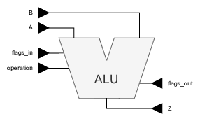

A number of exercises will use an arithmetic and logical unit (ALU). This component is described here. As you already know (at least by only looking at the name) it performs arithmetic operations and logical operations. The ALU that is used here, is based on the GameBoy’s custom take at the Z80.
For this course two (or one) 8-bit operand(s) serve(s) as input and an 8-bit result is generated. Together with the operands, there is a 4-bit vector that contains flags.
Off course there is a 3-bit operation selection to select what the output should produce.

--------------------------------------------------------------------------------
-- KU Leuven - ESAT/COSIC- Embedded Systems & Security
--------------------------------------------------------------------------------
-- Module Name: ALU - Behavioral
-- Project Name: CD and Verif
-- Description: The ALU that will be tested on
--
-- Revision Date Author Comments
-- v0.1 20210311 VlJo Initial version
--
--------------------------------------------------------------------------------
library IEEE;
use IEEE.STD_LOGIC_1164.ALL;
entity ALU is
port (
A : in STD_LOGIC_VECTOR(7 downto 0);
B : in STD_LOGIC_VECTOR(7 downto 0);
flags_in : in STD_LOGIC_VECTOR(3 downto 0);
Z : out STD_LOGIC_VECTOR(7 downto 0);
flags_out : out STD_LOGIC_VECTOR(3 downto 0);
operation: in STD_LOGIC_VECTOR(2 downto 0)
);
end ALU;
architecture Behavioural of ALU is
signal A_i, B_i, B_ii, Z_i : STD_LOGIC_VECTOR(7 downto 0);
signal C_i : STD_LOGIC;
signal Zfl_i, Nfl_i, Hfl_i, Cfl_i : STD_LOGIC;
signal Zfl_o, Nfl_o, Hfl_o, Cfl_o : STD_LOGIC;
signal operation_i : STD_LOGIC_VECTOR(2 downto 0);
signal sum, carry : STD_LOGIC_VECTOR(7 downto 0);
signal l_and, l_xor, l_or : STD_LOGIC_VECTOR(7 downto 0);
begin
-------------------------------------------------------------------------------
-- (DE-)LOCALISING IN/OUTPUTS
-------------------------------------------------------------------------------
A_i <= A;
B_i <= B;
Zfl_i <= flags_in(3);
Nfl_i <= flags_in(2);
Hfl_i <= flags_in(1);
Cfl_i <= flags_in(0);
operation_i <= operation;
Z <= Z_i;
-------------------------------------------------------------------------------
-- OUTPUT SELECTION
-------------------------------------------------------------------------------
PMUX: process(operation_i, A_i, B_i, sum, Cfl_i, Zfl_o, Hfl_o, Cfl_o, l_and, l_xor, l_or)
begin
B_ii <= B_i;
case operation_i is
when "001" => -- ADC => N is always zero
Z_i <= sum;
flags_out <= Zfl_o & '0' & Hfl_o & Cfl_o;
C_i <= Cfl_i;
when "010" => -- SUB => N is always one
Z_i <= sum;
flags_out <= Zfl_o & '1' & not(Hfl_o) & not(Cfl_o);
B_ii <= not(B_i);
C_i <= '1';
when "011" => -- SBC => N is always one
Z_i <= sum;
flags_out <= Zfl_o & '1' & not(Hfl_o) & not(Cfl_o);
B_ii <= not(B_i);
C_i <= not(Cfl_i);
when "100" => -- AND
Z_i <= l_and;
flags_out <= Zfl_o & '0' & '1' & '0';
when "101" => -- XOR
Z_i <= l_xor;
flags_out <= Zfl_o & '0' & '0' & '0';
C_i <= '0';
when "110" => -- OR
Z_i <= l_or;
flags_out <= Zfl_o & '0' & '0' & '0';
C_i <= '0';
when "111" => -- CP
Z_i <= A_i;
flags_out <= Zfl_o & '1' & not(Hfl_o) & not(Cfl_o);
B_ii <= not(B_i);
C_i <= '1';
when others =>
Z_i <= sum;
flags_out <= Zfl_o & '0' & Hfl_o & Cfl_o;
B_ii <= B_i;
C_i <= '0';
end case;
end process;
-------------------------------------------------------------------------------
-- Arithmetic operations
-------------------------------------------------------------------------------
RCA: for i in 0 to 7 generate
LSB: if i=0 generate
sum(i) <= A_i(i) xor B_ii(i) xor C_i;
carry(i) <= (A_i(i) and B_ii(i)) or (C_i and (A_i(i) xor B_ii(i)));
end generate LSB;
OTHER: if i>0 generate
sum(i) <= A_i(i) xor B_ii(i) xor carry(i-1);
carry(i) <= (A_i(i) and B_ii(i)) or (carry(i-1) and (A_i(i) xor B_ii(i)));
end generate OTHER;
end generate RCA;
-------------------------------------------------------------------------------
-- Logical operations
-------------------------------------------------------------------------------
l_and <= A_i and B_ii;
l_xor <= A_i xor B_ii;
l_or <= A_i or B_ii;
-------------------------------------------------------------------------------
-- FLAG DETERMINATION
-------------------------------------------------------------------------------
Zfl_o <= '1' when Z_i = x"00" else '0';
Nfl_o <= '1' when sum(7) = '1' else '0';
Hfl_o <= carry(3);
Cfl_o <= carry(7);
end Behavioural;